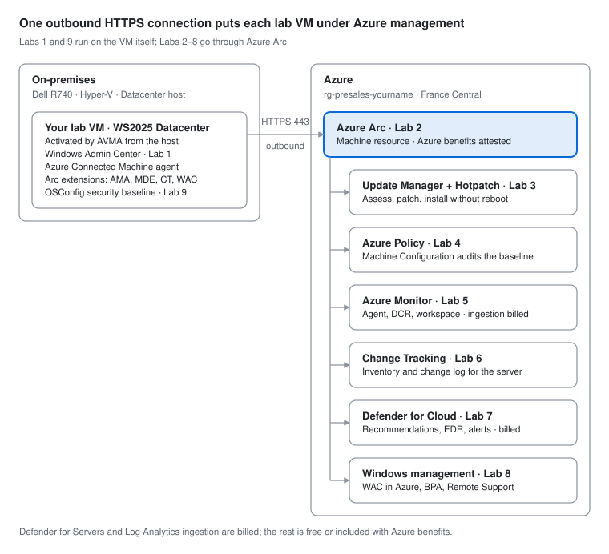

Windows Server 2025 Hybrid Labs
Hands-on labs for presales engineers: Windows Server 2025 on-premises, managed from Azure with Azure Arc. One VM per person, nine labs, each ending with customer talking points.
Nine labs, one VM each, about 8 hours — plan two days. Labs 2–8 are the hybrid track with Azure Arc; Labs 1 and 9 cover Windows Server 2025 on its own. Every lab ends with customer talking points, because the goal is not just to click through — it's to answer the customer's question in the meeting.
So what do you get? Each presales engineer has their own Windows Server 2025 Datacenter (Desktop Experience) VM on our Dell R740 Hyper-V host. It's already activated, has Remote Desktop on, and has internet access.
| Lab | What you'll be able to show a customer | Time | Azure cost |
|---|---|---|---|
| 1. Windows Admin Center | Browser-based management of a server | 45 min | None |
| 2. Azure Arc onboarding and Azure benefits | An on-premises server in the Azure portal, and the SA benefits unlocked | 75 min | Free |
| 3. Hotpatching with Azure Arc | Security updates without a reboot | 45 min | Free |
| 4. Azure Policy and Machine Configuration | Compliance of every server from one dashboard | 45 min + 30 min wait | Included with benefits |
| 5. Azure Monitor | Performance, event logs and alerts for hybrid servers | 60 min | Log ingestion billed |
| 6. Change Tracking and Inventory | "What changed on this server last night?" | 45 min | Included; ingestion billed |
| 7. Microsoft Defender for Cloud | Recommendations, secure score, EDR and alerts | 60 min | Defender for Servers billed (30-day trial) |
| 8. Windows management from Azure | WAC in the portal with no VPN, Best Practices Assessment, Remote Support | 60 min | Included; ingestion billed |
| 9. Security baseline with OSConfig | Secure-by-default: harden in one command, then see compliance rise in Azure | 45 min | None |
What you need:
- RDP access to your VM (name and password from your lab admin).
- From Lab 2: an Azure subscription where you can create a resource group (Contributor). The instructor handles the steps that need more rights: the Azure benefits attestation (Lab 2), Defender for Servers (Lab 7) and role assignments (Lab 8).
- Do the labs in order. Labs 6 and 8 reuse the workspace from Lab 5.

The Arc agent opens one outbound HTTPS connection on port 443; every Azure service in Labs 2–8 reaches the VM through it, with no inbound port open on the server.
When something breaks, don't worry. Your VM can be rebuilt in a few minutes — see Cleanup and reset.
Labs
- Windows Admin Center (45 min)
- Azure Arc onboarding and Azure benefits (75 min)
- Hotpatching with Azure Arc (45 min)
- Azure Policy and Machine Configuration (45 min + 30 min wait)
- Azure Monitor (60 min)
- Change Tracking and Inventory (45 min)
- Microsoft Defender for Cloud (60 min)
- Windows management from Azure (60 min + up to 4 h for the first assessment)
- Security baseline with OSConfig (45 min)
- Cleanup and reset
Lab environment (instructor)
The scripts folder builds the lab on a Hyper-V host running Windows Server 2025 Datacenter (activated — the VMs activate against it with AVMA). Run in an elevated PowerShell session on the host.
| Script | What it does |
|---|---|
New-WS2025LabVMs.ps1 |
Builds a template VHDX from the Windows Server 2025 ISO (once), then creates the lab VMs as Gen 2 VMs with Secure Boot and vTPM, injects an unattend.xml with the AVMA key, and checks activation. Skips VMs that already exist. |
Remove-LabVM.ps1 |
Deletes a VM and all its files (disks, checkpoints, folder). Never deletes the template or disks used by other VMs. Supports -WhatIf. |
Unblock-File .\scripts\*.ps1
.\scripts\New-WS2025LabVMs.ps1 -VMCount 8 # build the template + 8 VMs
.\scripts\Remove-LabVM.ps1 -Name WS25-VM03 -WhatIf # dry run
.\scripts\Remove-LabVM.ps1 -Name WS25-VM03 # delete one VMDefault ISO path, VM folder, memory and network settings are parameters at the top of New-WS2025LabVMs.ps1.
Sources
- Install Windows Admin Center
- Deploy Windows Server 2025 security baselines locally with OSConfig
- Quickstart: Connect a machine to Arc-enabled servers
- Windows Server Management enabled by Azure Arc
- Enable Hotpatch for Azure Arc-enabled servers
- Manage hotpatches on Arc-enabled machines
- Discover and assign built-in Machine Configuration policies
- Windows security baseline for Windows Server 2025 (Azure Policy)
- Tutorial: Monitor a hybrid machine with VM insights
- Quickstart: Enable Change Tracking and Inventory
- Protect your servers with Defender for Servers
- Validate alerts in Microsoft Defender for Cloud
- Manage Azure Arc-enabled servers using Windows Admin Center in Azure
- Configure Best Practices Assessment for Arc-enabled Windows servers